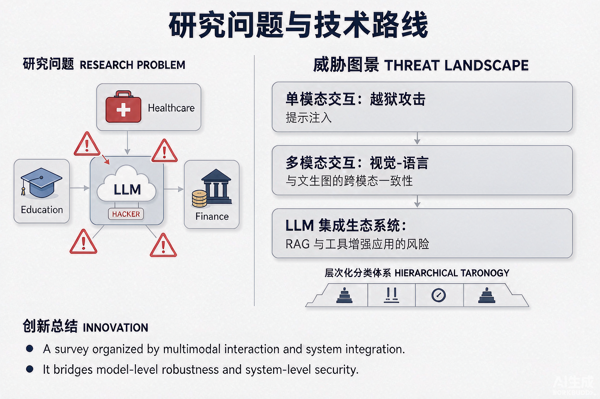

Problem
解决的问题
LLM 正从独立界面演变为普适计算环境的基础组件，成为人机协作的主要媒介；但这种普及也暴露出危及交互系统可靠性、安全性与人机信任的对抗性脆弱性。
Research on LLMs and VLMs · 2026 · CCF TPCI
When LLMs become ubiquitous: a comprehensive survey of adversarial vulnerabilities in LLM-driven pervasive intelligent systems
Problem
LLM 正从独立界面演变为普适计算环境的基础组件，成为人机协作的主要媒介；但这种普及也暴露出危及交互系统可靠性、安全性与人机信任的对抗性脆弱性。
Value
系统梳理 LLM 驱动的普适智能系统中的对抗性脆弱性与攻击，为构建安全、有韧性、可信的此类系统提供参考，并在 GitHub 列出并可视化全部综述文献。
Paper-grounded Academic Summary
主要创新性：从多模态交互与系统集成的视角，把威胁图景组织为三大维度——单模态交互中的对抗利用（越狱、提示注入）、多模态交互中的对抗挑战（视觉-语言、文生图的跨模态一致性）、LLM 集成生态系统中的对抗风险（RAG、工具增强应用）；并基于底层对抗技术提出层次化分类体系。
学术影响力：弥合普适部署场景下模型级鲁棒性与系统级安全之间的鸿沟，为研究者与实践者提供系统化的安全参考。

Technical Route
Innovation